Terni
PM10
| Statistic | N | Mean | St. Dev. | Min | Pctl(25) | Pctl(75) | Max |
| PM10 | 276 | 32.881 | 15.204 | 10.363 | 21.155 | 40.407 | 96.007 |
Moda:
72.91995
Al_i
| Statistic | N | Mean | St. Dev. | Min | Pctl(25) | Pctl(75) | Max |
| Al_i | 276 | 203.232 | 122.033 | 35.060 | 125.745 | 238.259 | 1,114.288 |
Moda: 325.46669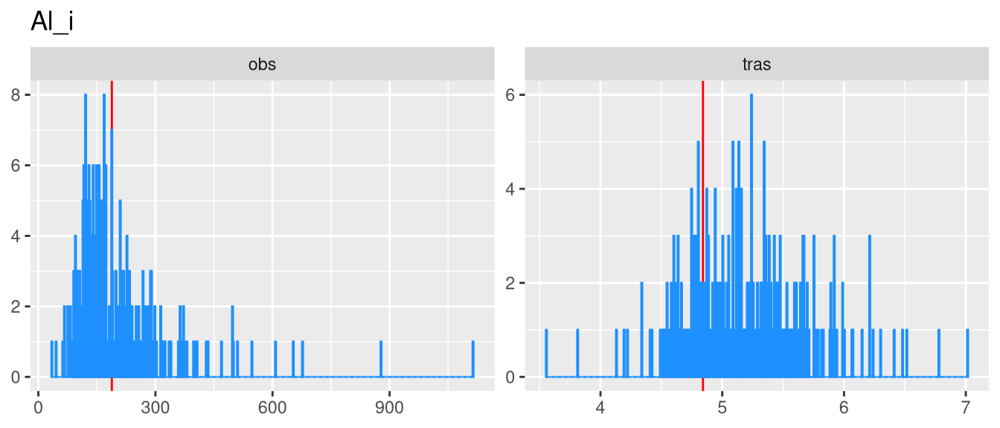
Al_s
| Statistic | N | Mean | St. Dev. | Min | Pctl(25) | Pctl(75) | Max |
| Al_s | 276 | 8.822 | 7.006 | 1.939 | 4.746 | 11.252 | 66.711 |
Moda:
1.9387
As_i
| Statistic | N | Mean | St. Dev. | Min | Pctl(25) | Pctl(75) | Max |
| As_i | 276 | 0.600 | 0.250 | 0.466 | 0.466 | 0.650 | 1.912 |
Moda:
0.466
As_s
| Statistic | N | Mean | St. Dev. | Min | Pctl(25) | Pctl(75) | Max |
| As_s | 276 | 0.338 | 0.236 | 0.035 | 0.183 | 0.464 | 1.481 |
Moda: 0.03536
B_i
| Statistic | N | Mean | St. Dev. | Min | Pctl(25) | Pctl(75) | Max |
| B_i | 276 | 3.249 | 3.724 | 0.546 | 1.337 | 3.956 | 38.742 |
Moda:
0.5465
B_s
| Statistic | N | Mean | St. Dev. | Min | Pctl(25) | Pctl(75) | Max |
| B_s | 276 | 4.734 | 2.989 | 1.264 | 2.210 | 6.764 | 16.254 |
Moda: 1.2644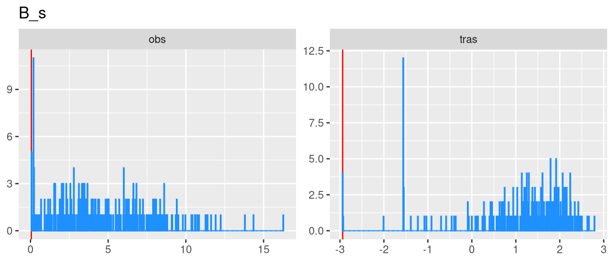
Ba_i
| Statistic | N | Mean | St. Dev. | Min | Pctl(25) | Pctl(75) | Max |
| Ba_i | 276 | 11.620 | 9.992 | 0.904 | 4.225 | 14.118 | 71.050 |
Moda: 0.904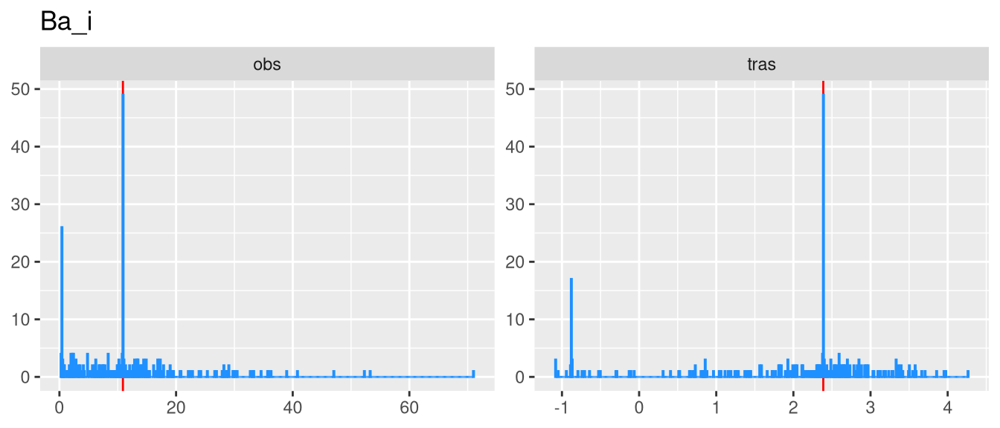
Ba_s
| Statistic | N | Mean | St. Dev. | Min | Pctl(25) | Pctl(75) | Max |
| Ba_s | 276 | 5.752 | 3.713 | 1.053 | 3.700 | 6.955 | 24.209 |
Moda: 4.17807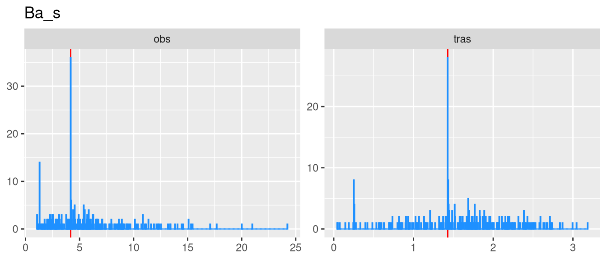
Bi_i
| Statistic | N | Mean | St. Dev. | Min | Pctl(25) | Pctl(75) | Max |
| Bi_i | 276 | 0.223 | 0.185 | 0.013 | 0.101 | 0.294 | 1.043 |
Moda:
0.0132
Bi_s
| Statistic | N | Mean | St. Dev. | Min | Pctl(25) | Pctl(75) | Max |
| Bi_s | 276 | 0.015 | 0.012 | 0.006 | 0.006 | 0.019 | 0.071 |
Moda:
0.0062
Ca_i
| Statistic | N | Mean | St. Dev. | Min | Pctl(25) | Pctl(75) | Max |
| Ca_i | 276 | 1,078.979 | 691.876 | 95.816 | 524.895 | 1,424.140 | 4,046.999 |
Moda:
524.01753
Ca_s
| Statistic | N | Mean | St. Dev. | Min | Pctl(25) | Pctl(75) | Max |
| Ca_s | 276 | 835.459 | 351.374 | 92.181 | 614.231 | 1,000.065 | 2,976.492 |
Moda:
561.31674
Cd_i
| Statistic | N | Mean | St. Dev. | Min | Pctl(25) | Pctl(75) | Max |
| Cd_i | 276 | 0.055 | 0.052 | 0.004 | 0.019 | 0.078 | 0.336 |
Moda: 0.00416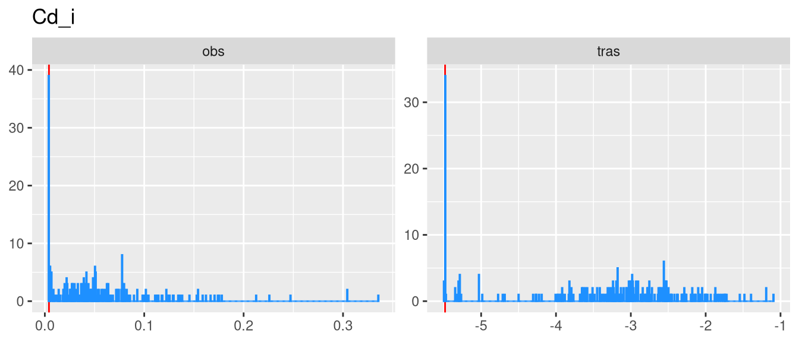
Cd_s
| Statistic | N | Mean | St. Dev. | Min | Pctl(25) | Pctl(75) | Max |
| Cd_s | 276 | 0.127 | 0.120 | 0.007 | 0.038 | 0.201 | 0.673 |
Moda: 0.01681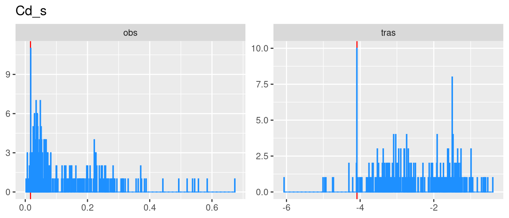
Ce_i
| Statistic | N | Mean | St. Dev. | Min | Pctl(25) | Pctl(75) | Max |
| Ce_i | 276 | 0.296 | 0.144 | 0.103 | 0.213 | 0.349 | 1.097 |
Moda:
0.10421
Ce_s
| Statistic | N | Mean | St. Dev. | Min | Pctl(25) | Pctl(75) | Max |
| Ce_s | 276 | 0.023 | 0.019 | 0.016 | 0.016 | 0.023 | 0.226 |
Moda: 0.0156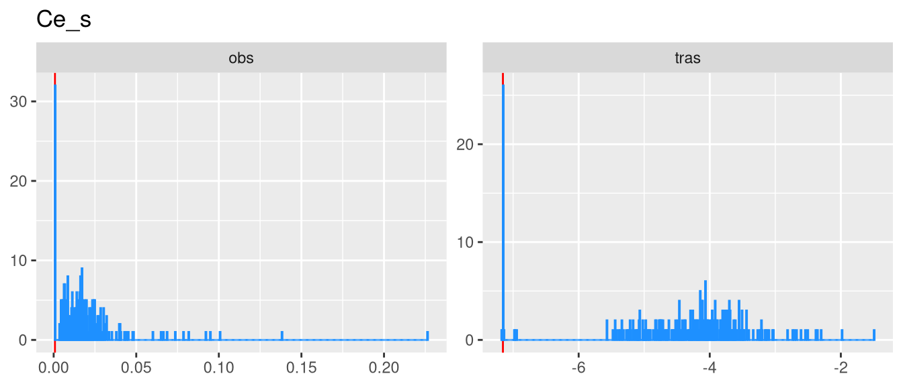
Co_i
| Statistic | N | Mean | St. Dev. | Min | Pctl(25) | Pctl(75) | Max |
| Co_i | 276 | 0.288 | 0.337 | 0.024 | 0.141 | 0.323 | 2.741 |
Moda:
0.02474
Co_s
| Statistic | N | Mean | St. Dev. | Min | Pctl(25) | Pctl(75) | Max |
| Co_s | 276 | 0.040 | 0.025 | 0.005 | 0.022 | 0.055 | 0.166 |
Moda:
0.0057
Cr_i
| Statistic | N | Mean | St. Dev. | Min | Pctl(25) | Pctl(75) | Max |
| Cr_i | 276 | 33.532 | 35.107 | 3.081 | 15.601 | 37.158 | 319.618 |
Moda:
13.04765
Cr_s
| Statistic | N | Mean | St. Dev. | Min | Pctl(25) | Pctl(75) | Max |
| Cr_s | 276 | 1.858 | 1.452 | 0.091 | 1.026 | 2.274 | 13.953 |
Moda:
0.0914
Cs_i
| Statistic | N | Mean | St. Dev. | Min | Pctl(25) | Pctl(75) | Max |
| Cs_i | 276 | 0.031 | 0.024 | 0.001 | 0.020 | 0.039 | 0.172 |
Moda:
0.0013
Cs_s
| Statistic | N | Mean | St. Dev. | Min | Pctl(25) | Pctl(75) | Max |
| Cs_s | 276 | 0.043 | 0.037 | 0.007 | 0.014 | 0.067 | 0.183 |
Moda: 0.0066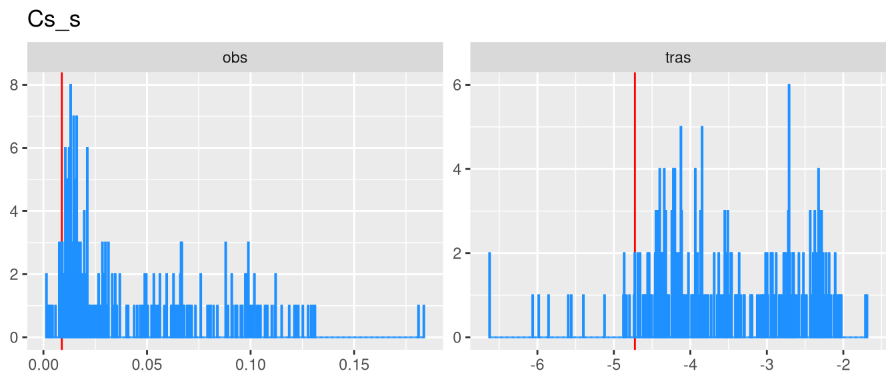
Cu_i
| Statistic | N | Mean | St. Dev. | Min | Pctl(25) | Pctl(75) | Max |
| Cu_i | 276 | 9.789 | 5.547 | 1.584 | 5.872 | 12.790 | 29.313 |
Moda:
4.36269
Cu_s
| Statistic | N | Mean | St. Dev. | Min | Pctl(25) | Pctl(75) | Max |
| Cu_s | 276 | 2.955 | 1.922 | 0.270 | 1.615 | 3.707 | 13.633 |
Moda:
1.63114
Fe_i
| Statistic | N | Mean | St. Dev. | Min | Pctl(25) | Pctl(75) | Max |
| Fe_i | 276 | 510.859 | 348.836 | 44.106 | 314.111 | 612.267 | 3,981.485 |
Moda: 446.74105
Fe_s
| Statistic | N | Mean | St. Dev. | Min | Pctl(25) | Pctl(75) | Max |
| Fe_s | 276 | 12.914 | 8.373 | 0.815 | 7.412 | 16.835 | 52.926 |
Moda:
1.82049
Ga_i
| Statistic | N | Mean | St. Dev. | Min | Pctl(25) | Pctl(75) | Max |
| Ga_i | 276 | 0.081 | 0.047 | 0.005 | 0.056 | 0.102 | 0.311 |
Moda: 0.0049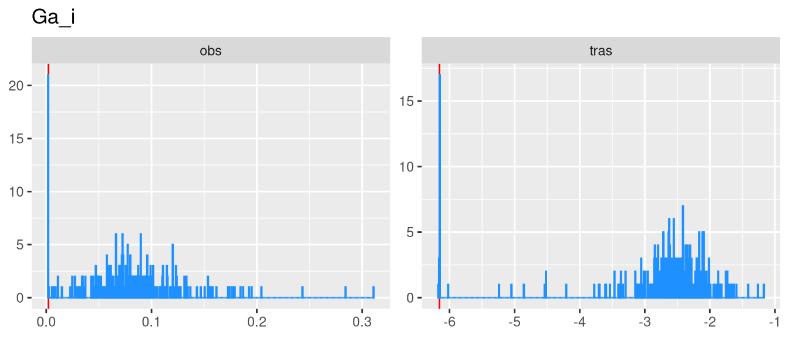
Ga_s
| Statistic | N | Mean | St. Dev. | Min | Pctl(25) | Pctl(75) | Max |
| Ga_s | 276 | 0.010 | 0.008 | 0.001 | 0.003 | 0.014 | 0.065 |
Moda:
0.00343
K_i
| Statistic | N | Mean | St. Dev. | Min | Pctl(25) | Pctl(75) | Max |
| K_i | 276 | 1,026.722 | 989.360 | 91.793 | 232.653 | 1,474.250 | 4,711.619 |
Moda:
91.7929
K_s
| Statistic | N | Mean | St. Dev. | Min | Pctl(25) | Pctl(75) | Max |
| K_s | 276 | 362.224 | 314.328 | 70.380 | 132.265 | 541.974 | 1,979.413 |
Moda: 70.3797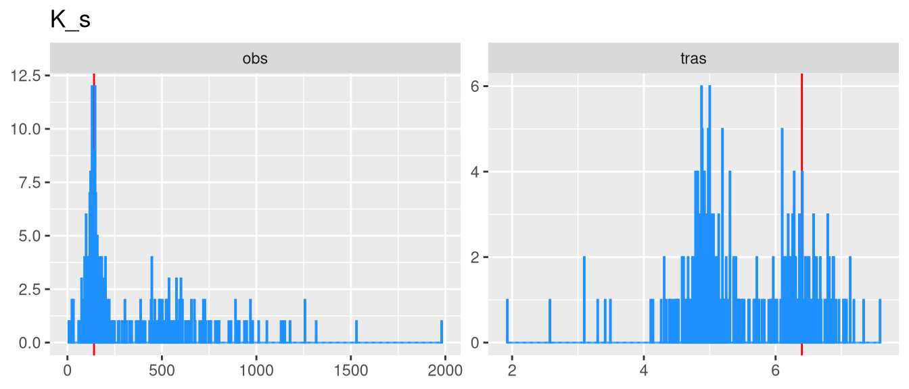
La_i
| Statistic | N | Mean | St. Dev. | Min | Pctl(25) | Pctl(75) | Max |
| La_i | 276 | 0.161 | 0.080 | 0.055 | 0.121 | 0.175 | 0.657 |
Moda:
0.06099
La_s
| Statistic | N | Mean | St. Dev. | Min | Pctl(25) | Pctl(75) | Max |
| La_s | 276 | 0.015 | 0.010 | 0.013 | 0.013 | 0.013 | 0.122 |
Moda:
0.0131
Li_i
| Statistic | N | Mean | St. Dev. | Min | Pctl(25) | Pctl(75) | Max |
| Li_i | 276 | 0.113 | 0.060 | 0.021 | 0.074 | 0.134 | 0.432 |
Moda:
0.0208
Li_s
| Statistic | N | Mean | St. Dev. | Min | Pctl(25) | Pctl(75) | Max |
| Li_s | 276 | 0.135 | 0.088 | 0.014 | 0.071 | 0.179 | 0.906 |
Moda:
0.13144
Mg_i
| Statistic | N | Mean | St. Dev. | Min | Pctl(25) | Pctl(75) | Max |
| Mg_i | 276 | 58.270 | 26.820 | 22.661 | 40.628 | 70.448 | 181.842 |
Moda:
22.66079
Mg_s
| Statistic | N | Mean | St. Dev. | Min | Pctl(25) | Pctl(75) | Max |
| Mg_s | 276 | 64.018 | 29.284 | 12.722 | 47.359 | 74.246 | 351.313 |
Moda:
52.1769
Mn_i
| Statistic | N | Mean | St. Dev. | Min | Pctl(25) | Pctl(75) | Max |
| Mn_i | 276 | 10.502 | 6.216 | 1.476 | 6.742 | 12.307 | 48.068 |
Moda: 13.54103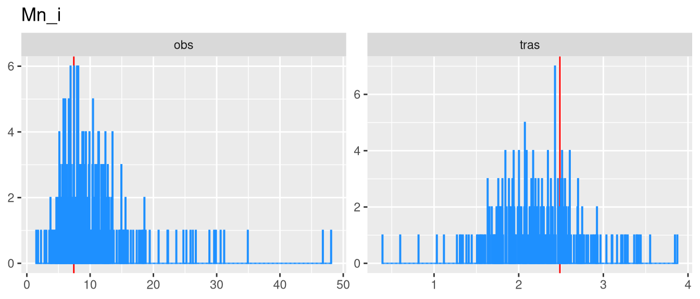
Mn_s
| Statistic | N | Mean | St. Dev. | Min | Pctl(25) | Pctl(75) | Max |
| Mn_s | 276 | 7.145 | 4.344 | 0.729 | 4.160 | 9.555 | 46.037 |
Moda:
4.49987
Mo_i
| Statistic | N | Mean | St. Dev. | Min | Pctl(25) | Pctl(75) | Max |
| Mo_i | 276 | 4.143 | 3.981 | 0.260 | 1.458 | 5.949 | 29.933 |
Moda:
0.75262
Mo_s
| Statistic | N | Mean | St. Dev. | Min | Pctl(25) | Pctl(75) | Max |
| Mo_s | 276 | 8.032 | 10.786 | 0.935 | 3.345 | 7.864 | 95.651 |
Moda: 0.935
Na_i
| Statistic | N | Mean | St. Dev. | Min | Pctl(25) | Pctl(75) | Max |
| Na_i | 276 | 285.528 | 136.400 | 97.710 | 199.653 | 348.854 | 808.047 |
Moda: 135.73826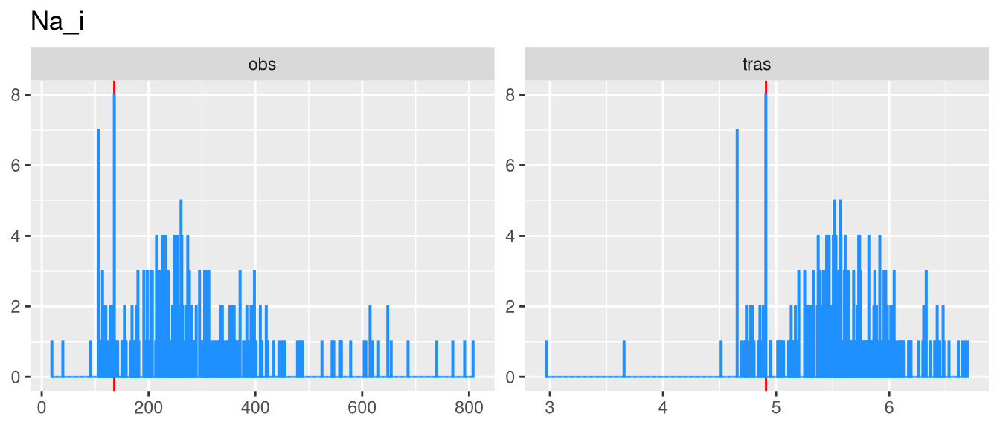
Na_s
| Statistic | N | Mean | St. Dev. | Min | Pctl(25) | Pctl(75) | Max |
| Na_s | 276 | 371.842 | 167.160 | 16.841 | 281.853 | 437.419 | 1,413.773 |
Moda:
406.46763
Nb_i
| Statistic | N | Mean | St. Dev. | Min | Pctl(25) | Pctl(75) | Max |
| Nb_i | 276 | 0.167 | 0.252 | 0.002 | 0.065 | 0.161 | 2.821 |
Moda: 0.0024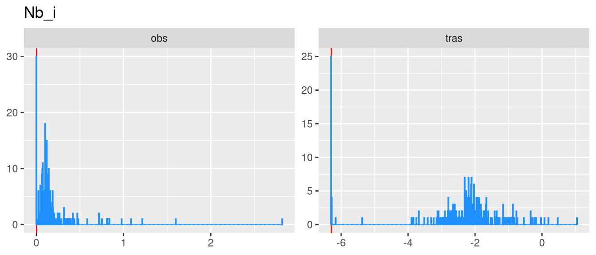
Nb_s
| Statistic | N | Mean | St. Dev. | Min | Pctl(25) | Pctl(75) | Max |
| Nb_s | 276 | 0.005 | 0.008 | 0.001 | 0.002 | 0.005 | 0.067 |
Moda: 0.0011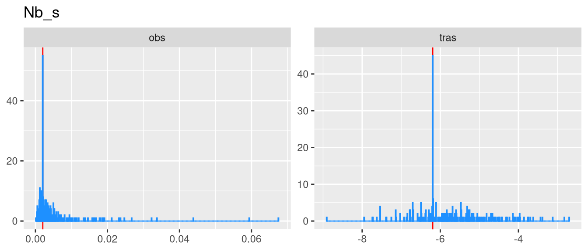
Ni_i
| Statistic | N | Mean | St. Dev. | Min | Pctl(25) | Pctl(75) | Max |
| Ni_i | 276 | 14.985 | 20.085 | 1.374 | 6.124 | 15.088 | 157.307 |
Moda:
5.99583
Ni_s
| Statistic | N | Mean | St. Dev. | Min | Pctl(25) | Pctl(75) | Max |
| Ni_s | 276 | 1.189 | 1.060 | 0.111 | 0.629 | 1.364 | 8.791 |
Moda: 0.2856
Pb_i
| Statistic | N | Mean | St. Dev. | Min | Pctl(25) | Pctl(75) | Max |
| Pb_i | 276 | 5.290 | 3.345 | 0.436 | 3.078 | 6.441 | 30.438 |
Moda:
9.11
Pb_s
| Statistic | N | Mean | St. Dev. | Min | Pctl(25) | Pctl(75) | Max |
| Pb_s | 276 | 0.890 | 0.840 | 0.176 | 0.320 | 1.156 | 6.307 |
Moda:
0.1758
Rb_i
| Statistic | N | Mean | St. Dev. | Min | Pctl(25) | Pctl(75) | Max |
| Rb_i | 276 | 0.332 | 0.199 | 0.098 | 0.196 | 0.386 | 1.279 |
Moda:
0.0979
Rb_s
| Statistic | N | Mean | St. Dev. | Min | Pctl(25) | Pctl(75) | Max |
| Rb_s | 276 | 0.872 | 0.738 | 0.104 | 0.369 | 1.231 | 4.400 |
Moda: 0.1038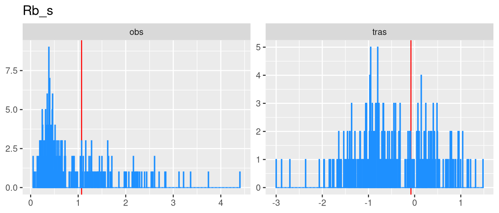
Sb_i
| Statistic | N | Mean | St. Dev. | Min | Pctl(25) | Pctl(75) | Max |
| Sb_i | 276 | 0.823 | 0.548 | 0.042 | 0.405 | 1.113 | 3.605 |
Moda:
0.33791
Sb_s
| Statistic | N | Mean | St. Dev. | Min | Pctl(25) | Pctl(75) | Max |
| Sb_s | 276 | 0.403 | 0.186 | 0.038 | 0.271 | 0.492 | 1.334 |
Moda: 0.21485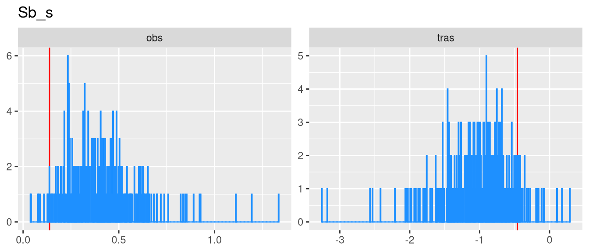
Sn_i
| Statistic | N | Mean | St. Dev. | Min | Pctl(25) | Pctl(75) | Max |
| Sn_i | 276 | 3.776 | 3.022 | 0.297 | 1.446 | 5.192 | 13.784 |
Moda: 7.93704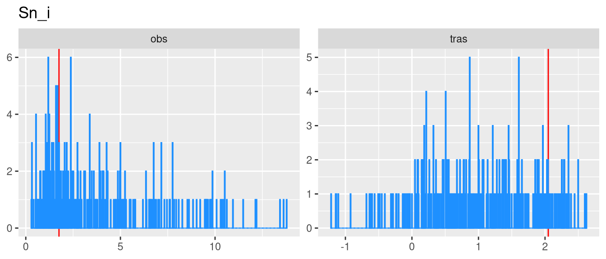
Sn_s
| Statistic | N | Mean | St. Dev. | Min | Pctl(25) | Pctl(75) | Max |
| Sn_s | 276 | 0.179 | 0.117 | 0.023 | 0.099 | 0.218 | 0.817 |
Moda: 0.17924
Sr_i
| Statistic | N | Mean | St. Dev. | Min | Pctl(25) | Pctl(75) | Max |
| Sr_i | 276 | 1.788 | 1.002 | 0.520 | 1.093 | 2.286 | 5.604 |
Moda:
0.60836
Sr_s
| Statistic | N | Mean | St. Dev. | Min | Pctl(25) | Pctl(75) | Max |
| Sr_s | 276 | 2.190 | 1.278 | 0.414 | 1.462 | 2.447 | 10.534 |
Moda: 5.90256
Ti_i
| Statistic | N | Mean | St. Dev. | Min | Pctl(25) | Pctl(75) | Max |
| Ti_i | 276 | 5.481 | 3.198 | 0.880 | 3.544 | 6.312 | 23.153 |
Moda:
7.92565
Ti_s
| Statistic | N | Mean | St. Dev. | Min | Pctl(25) | Pctl(75) | Max |
| Ti_s | 276 | 0.133 | 0.114 | 0.084 | 0.084 | 0.145 | 1.527 |
Moda:
0.0839
Tl_i
| Statistic | N | Mean | St. Dev. | Min | Pctl(25) | Pctl(75) | Max |
| Tl_i | 276 | 0.034 | 0.026 | 0.001 | 0.014 | 0.049 | 0.187 |
Moda: 0.0011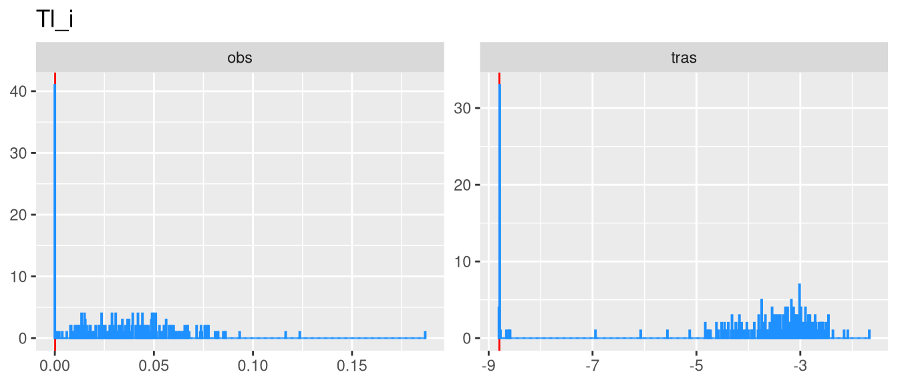
Tl_s
| Statistic | N | Mean | St. Dev. | Min | Pctl(25) | Pctl(75) | Max |
| Tl_s | 276 | 0.093 | 0.081 | 0.002 | 0.026 | 0.153 | 0.497 |
Moda: 0.10397
U_i
| Statistic | N | Mean | St. Dev. | Min | Pctl(25) | Pctl(75) | Max |
| U_i | 276 | 0.008 | 0.005 | 0.002 | 0.004 | 0.011 | 0.030 |
Moda: 0.0017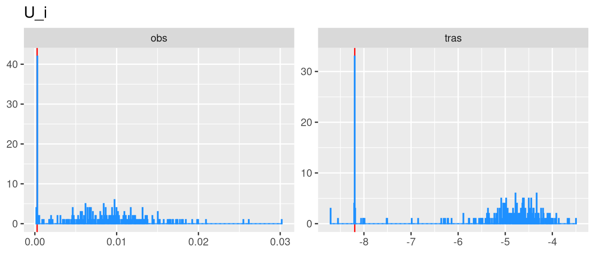
U_s
| Statistic | N | Mean | St. Dev. | Min | Pctl(25) | Pctl(75) | Max |
| U_s | 276 | 0.002 | 0.001 | 0.0004 | 0.001 | 0.002 | 0.005 |
Moda: 0.00182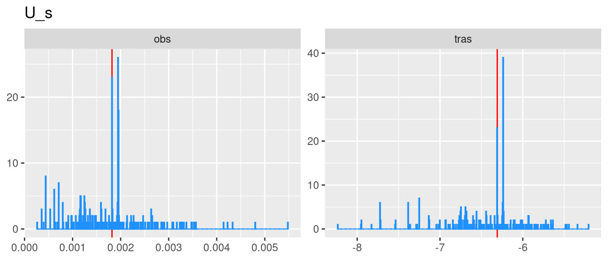
V_i
| Statistic | N | Mean | St. Dev. | Min | Pctl(25) | Pctl(75) | Max |
| V_i | 276 | 0.499 | 0.343 | 0.091 | 0.268 | 0.638 | 2.078 |
Moda:
0.0908
V_s
| Statistic | N | Mean | St. Dev. | Min | Pctl(25) | Pctl(75) | Max |
| V_s | 276 | 0.610 | 0.485 | 0.030 | 0.267 | 0.844 | 3.301 |
Moda:
0.0297
W_i
| Statistic | N | Mean | St. Dev. | Min | Pctl(25) | Pctl(75) | Max |
| W_i | 276 | 0.093 | 0.075 | 0.028 | 0.045 | 0.116 | 0.464 |
Moda:
0.0278
W_s
| Statistic | N | Mean | St. Dev. | Min | Pctl(25) | Pctl(75) | Max |
| W_s | 276 | 0.087 | 0.099 | 0.003 | 0.041 | 0.093 | 0.693 |
Moda:
0.18152
Zn_i
| Statistic | N | Mean | St. Dev. | Min | Pctl(25) | Pctl(75) | Max |
| Zn_i | 276 | 40.470 | 27.820 | 11.462 | 25.921 | 43.040 | 181.676 |
Moda:
34.80341
Zn_s
| Statistic | N | Mean | St. Dev. | Min | Pctl(25) | Pctl(75) | Max |
| Zn_s | 276 | 28.817 | 21.085 | 4.079 | 14.791 | 37.257 | 198.147 |
Moda:
4.14894
Zr_i
| Statistic | N | Mean | St. Dev. | Min | Pctl(25) | Pctl(75) | Max |
| Zr_i | 276 | 0.646 | 0.322 | 0.090 | 0.415 | 0.827 | 1.659 |
Moda:
0.08957
Zr_s
| Statistic | N | Mean | St. Dev. | Min | Pctl(25) | Pctl(75) | Max |
| Zr_s | 276 | 0.025 | 0.031 | 0.002 | 0.009 | 0.030 | 0.325 |
Moda:
0.00318